|
Linear mixed models (with Dr. Elizabeth Pankratz) |
Regression refresher, intro to group-structured data |
| Modelling group-structured data using random effects | |
| Interpreting LMMs and building maximal models | |
| Troubleshooting model fit, checking assumptions + diagnostics | |
| LMMs: Practice analysis | |
|
factor analysis working with multi-item measures (with Dr. Josiah King) |
measurement and dimensionality |
| exploring underlying constructs (EFA) | |
| testing theoretical models (CFA) | |
| reliability and validity | |
| recap & exam prep |
Regression refresher,
intro to group-structured data
Data Analysis for Psychology in R 3
Elizabeth Pankratz (elizabeth.pankratz@ed.ac.uk)
Department of Psychology
University of Edinburgh
2026–2027
Course Overview
Warm-up
Part 1: Brain dump all the stats terms you know/remember
Here are some visuals that might help jog your memory:
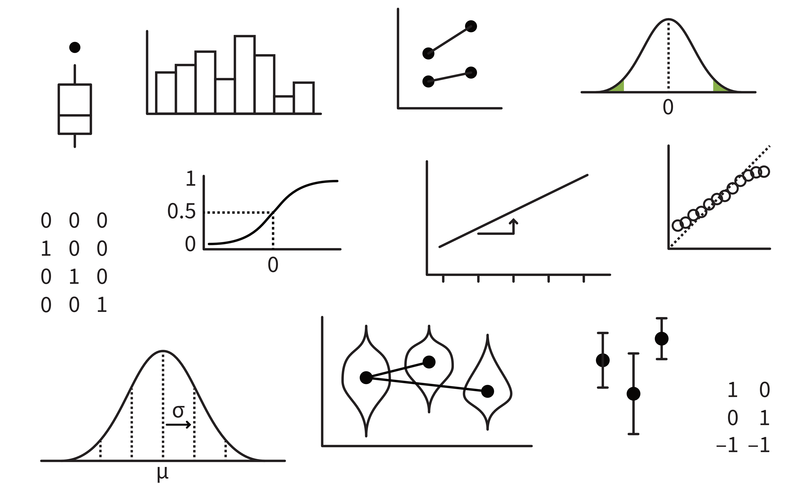
Part 2: Connect key ideas
Example terms:
- standard deviation (SD)
- standard error (SE)
- confidence interval (CI)
Individually or with your seatmates:
- Relax while Elizabeth transfers key terms to the hexagon sheet
- Using a big-screened device, access hexagons at this link: https://edin.ac/4cQpsUM
- Duplicate Slide 1 and work on your own duplicated copy
- Click and drag each term from the menu onto its own hexagon. If two hexagons are touching, then the ideas on each hexagon are somehow connected.
There are no wrong answers here! The purpose of this activity is to help you remember a few of the ways that a few big ideas fit together.
Part 3: Think about the properties of lines
Linear regression refresher
Data: After one week of mindfulness treatments, life satisfaction ratings from 36 people
Code
set.seed(1)
p_lifesat <- lifesat |>
ggplot(aes(x = condition, y = lifesat, fill = condition, colour = condition)) +
geom_violin(alpha = 0.5) +
geom_jitter(alpha = 0.5, size = 5) +
stat_summary(geom = 'point', fun = mean, colour = 'black', size = 8) +
theme(legend.position = 'none') +
scale_colour_manual(values = pal) +
scale_fill_manual(values = pal) +
NULL
p_lifesat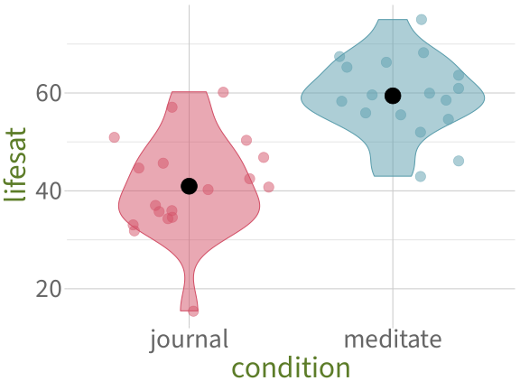
# A tibble: 15 x 3
condition ppt_id lifesat
<chr> <chr> <dbl>
1 journal j1 34.2
2 journal j2 42.5
3 journal j3 45.6
4 journal j4 44.6
5 journal j5 35.7
6 journal j6 50.2
7 journal j7 31.9
8 journal j8 40.7
9 journal j9 57.2
10 journal j10 37.0
11 journal j11 33.0
12 journal j12 46.9
13 journal j13 34.7
14 journal j14 36.1
15 journal j15 60.2Numerically, there is a difference between condition means: “meditate” has higher lifesat than “journal”.
We want to test: Is that difference between condition means sufficiently unlikely to equal zero?
Is the difference between condition means sufficiently unlikely to equal zero?
A linear model will fit a line that passes through the two group means.
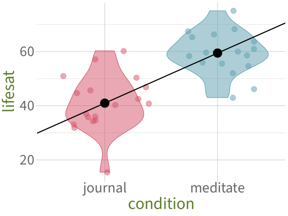
To answer our question, we will first imagine that in reality, the true slope of this line is zero: the groups are not different at all (= our null hypothesis).
In that reality where the groups are not different, we know the distribution of values that the slope could reasonably have.
We compare that null distribution to the slope we have actually observed.
If our observed slope falls in either tail of the null distribution, then we can say that the slope is significantly different from zero!
Fit the model
Call:
lm(formula = lifesat ~ condition, data = lifesat)
Residuals:
Min 1Q Median 3Q Max
-25.467 -4.980 -0.274 5.933 19.280
Coefficients:
Estimate Std. Error t value Pr(>|t|)
(Intercept) 40.95 2.17 18.88 < 2e-16 ***
conditionmeditate 18.47 3.07 6.02 0.00000081 ***
---
Signif. codes: 0 '***' 0.001 '**' 0.01 '*' 0.05 '.' 0.1 ' ' 1
Residual standard error: 9.2 on 34 degrees of freedom
Multiple R-squared: 0.516, Adjusted R-squared: 0.502
F-statistic: 36.2 on 1 and 34 DF, p-value: 0.000000812Interpret model coefficients

Coefficients:
Estimate Std. Error t value Pr(>|t|)
(Intercept) 40.95 2.17 18.88 < 2e-16 ***
conditionmeditate 18.47 3.07 6.02 0.00000081 ***(Intercept) = the estimated average lifesat for condition = 0, the reference level, which is journal.
- People who journal are estimated to have a life satisfaction of 40.95 points, on average.
- This estimate is significantly different from zero (\(p\) < .001), but that’s not very surprising or interesting.
conditionmeditate: = the difference between the average lifesat when condition = 1 = meditate and the average lifesat when condition = 0 = journal.
- People who meditate are estimated to have a life satisfaction that’s 18.47 points greater than people who journal.
- This estimate is significantly different from zero (\(p\) < .001).
So yes, the difference between condition means is sufficiently unlikely to equal zero!
We reject the H0 and declare that the groups are significantly different.
Now that we’re warmed up: welcome to DAPR3 ✨
This week’s learning objectives
What is a grouping variable?
Why are grouping variables important to know about?
What does a statistical model aim to represent / to capture / to formalise?
What are the different kinds of variability that a statistical model must account for?
Between-subjects vs.
repeated measures
Between-subjects vs. repeated measures: What do these terms mean to you?
An example of repeated-measures data:
One week of mindfulness treatments
Code
p_lifesat_week <- lifesat_week |>
ggplot(aes(x = day, y = lifesat, colour = condition)) +
geom_smooth(method ='lm', se = F, formula = 'y ~ x', linewidth = 2) +
geom_jitter(alpha = 0.5, width = .2, size = 5) +
scale_colour_manual(values = pal) +
scale_x_continuous(breaks = 1:7) +
theme(
legend.position = 'bottom',
panel.grid.minor.x = element_blank()
) +
NULL
p_lifesat_week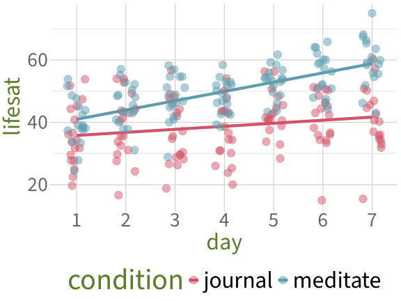
# A tibble: 15 x 4
day condition ppt_id lifesat
<dbl> <chr> <chr> <dbl>
1 1 journal j1 36.6
2 2 journal j1 33.8
3 3 journal j1 44.2
4 4 journal j1 25.3
5 5 journal j1 42.4
6 6 journal j1 45.2
7 7 journal j1 34.2
8 1 journal j2 22.5
9 2 journal j2 40.5
10 3 journal j2 34.7
11 4 journal j2 43.5
12 5 journal j2 41.1
13 6 journal j2 44.4
14 7 journal j2 42.5
15 1 journal j3 51.8(In the example from before, we were looking at data from Day 7 only!)
RQs: Does life satisfaction increase, the longer people take part in treatment? Is one treatment associated with greater life satisfaction than the other?
How do we know that this is
repeated measures data?
# A tibble: 12 x 4
day condition ppt_id lifesat
<dbl> <chr> <chr> <dbl>
1 1 journal j1 36.6
2 2 journal j1 33.8
3 3 journal j1 44.2
4 4 journal j1 25.3
5 5 journal j1 42.4
6 6 journal j1 45.2
7 7 journal j1 34.2
8 1 journal j2 22.5
9 2 journal j2 40.5
10 3 journal j2 34.7
11 4 journal j2 43.5
12 5 journal j2 41.1We have data from multiple
ppt_ids (j1,j2, etc.), and each of thoseppt_ids appears more than once in our dataset.Specifically, each participant has one
lifesatvalue perday.In other words, each participant has contributed repeated measurements to the dataset.
Because each participant contributed multiple observations, we call ppt_id a “grouping variable”.
dayandconditionalso contain multiple observations of the same value. In this way, they are also grouping variables. But they’re conceptually a bit different fromppt_id, as we’ll see soon.
Why are grouping variables important?
Why are grouping variables important?
If you took DAPR2, you might remember that linear models make four assumptions:
- Linearity of association: The association between predictors and outcome can reasonably be modelled as a straight line.
- Independence of errors: Each data point is independent from each other data point. (Knowing something about one data point tells you nothing about any of the other data points.)
- Normality of errors: The model’s errors (the distance between observed point and model-estimated line) are normally-distributed.
- Equal variance of errors: The model’s errors have similar variance across the whole range of model-fitted values.
As soon as we have repeated-measures data with grouping variables like ppt_id, the data points are no longer independent.
Why aren’t the data points independent?
Code
lifesat_week |>
filter(ppt_id %in% c('j16', 'm9')) |>
ggplot(aes(x = day, y = lifesat, colour = ppt_id, shape = ppt_id)) +
geom_point(size = 7) +
scale_colour_manual(values = pal[2:3]) +
scale_x_continuous(breaks = 1:7) +
theme(
legend.position = 'bottom',
panel.grid.minor.x = element_blank()
) +
NULL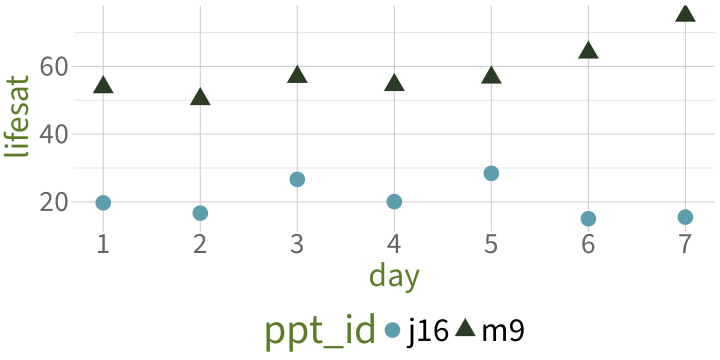
If we know one data point from m9, we can make some good guesses about what values m9’s other data points might have. Same for j16.
- In other words: Some of our data gives us information about other parts of our data.
- In other words: Data points from one person are not independent of other data points from that same person.
We use grouping variables to tell the model that data points are not independent, and instead are grouped together in this way.
- The specifics of how we tell the model about grouping variables: next week.
- This week: how we identify grouping variables in any dataset.
How to identify grouping variables: Two examples
Ex. 1: Mindfulness treatments, Day 7
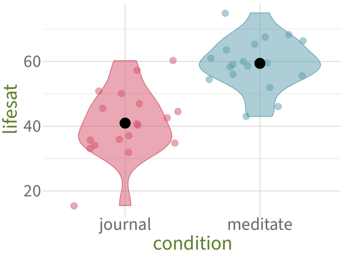
What categorical variables do we have in lifesat?
Ex. 1: Grouping and counting
For condition:
Each value of condition appears more than once.
condition is a grouping variable ✅
Each value of ppt_id appears only once.
ppt_id is not a grouping variable ❌
Ex. 2: A week of mindfulness treatments
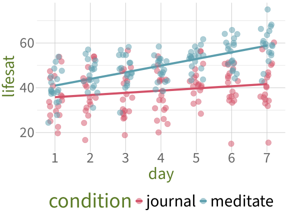
What categorical variables do we have in lifesat_week?
Rows: 252
Columns: 4
$ day <dbl> 1, 2, 3, 4, 5, 6, 7, 1, 2, 3, 4, 5, 6, 7, 1, 2, 3, 4, 5, 6, ~
$ condition <chr> "journal", "journal", "journal", "journal", "journal", "jour~
$ ppt_id <chr> "j1", "j1", "j1", "j1", "j1", "j1", "j1", "j2", "j2", "j2", ~
$ lifesat <dbl> 36.6, 33.8, 44.2, 25.3, 42.4, 45.2, 34.2, 22.5, 40.5, 34.7, ~Ex. 2: Grouping and counting
For day:
For condition:
Each value of day appears more than once.
day is a grouping variable ✅
Each value of condition appears more than once.
condition is a grouping variable ✅
Each value of ppt_id appears more than once.
ppt_id is a grouping variable ✅
Ex. 2: Conceptual differences between these grouping variables
Our RQs are about how different conditions and different days are associated with lifesat.
- Notice that these RQs refers to only two of the grouping variables,
conditionandday. conditionanddayare manipulated / controlled by our experimental design.
- The RQ does not refer to the third grouping variable,
ppt_id. ppt_idis not manipulated / controlled by the experimental design.- But our statistical model needs to account for it anyway.
- The first block of DAPR3 is all about learning how to do that.
Thinking in models:
What process generated the outcome data we observe?
Ex. 1: Mindfulness treatments, Day 7
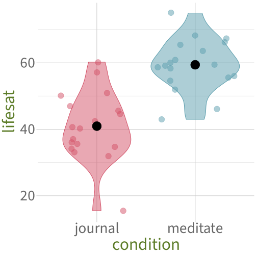
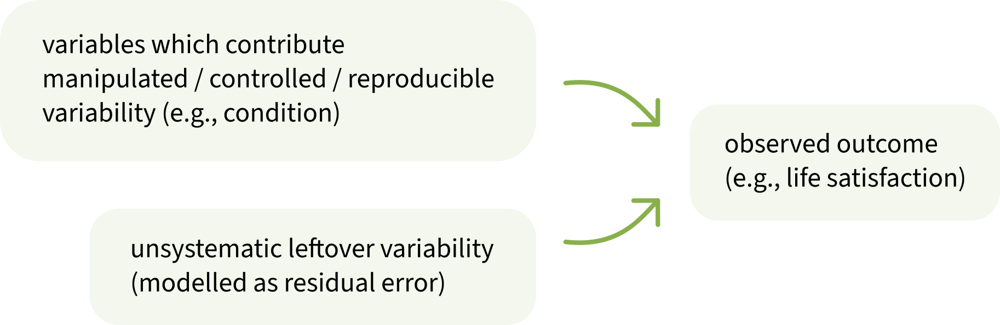
Ex. 2: A week of mindfulness treatments
When we have multiple observations from a single source (here, a single person), we have something new: random, non-manipulated variability that comes from a specific variable.
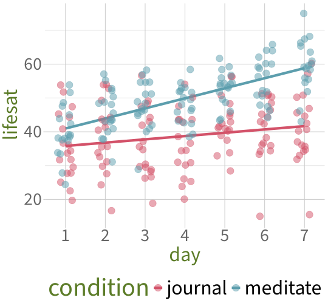
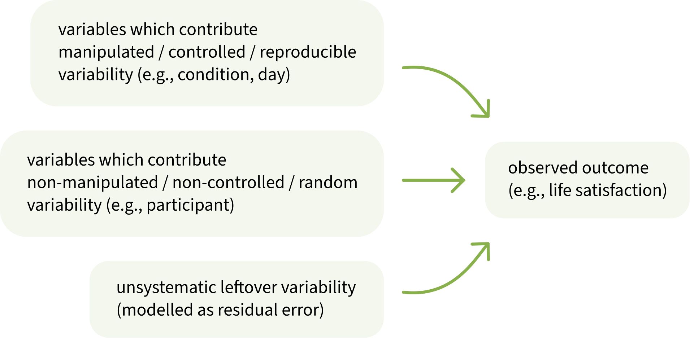
Identifying reproducible vs. random variability: Strategy 1
Ask yourself: If the same RQ were tested again in a different experiment, which variables would have to stay the same, and which variables could potentially be different?
Does the variable need to contain the same values, or else the RQ could not be tested?
- If so: this variable contributes manipulated / controlled / reproducible variability.
- e.g.:
- experimental manipulations
- covariates to control for other influences (e.g., handedness, age, gender)
Could the variable potentially contain different values, and the RQ would still be testable?
- If so: this variable contributes non-manipulated / non-controlled / random variability.
- e.g.:
- participants/subjects
- stimuli
Identifying reproducible vs. random variability: Strategy 2
Our goal is often to generalise the results of our analysis to a broader population.
Ask yourself: What variables can and cannot be generalised over?
If your analysis should be able to generalise across all potential levels of a grouping variable, even beyond the ones you observed, then the grouping variable contributes non-manipulated / non-controlled / random variability.
For example: Do we want our results to generalise to all possible experimental conditions, beyond the ones we studied?
- The question doesn’t really make sense … what other experimental conditions even are there?
- We only want to make statements about the specific experimental conditions we’re testing—that’s why we’re testing them.
- So a variable that represents experimental conditions does not contribute random variability to the data.
But: Do we want our results to generalise to all possible people, beyond the ones we studied?
- Yeah, that would be ideal!
- So a variable that represents different people does contribute random variability to the data.
Back matter
Learning objectives revisited
What is a grouping variable?
- A categorical variable whose values appear more than once in the dataset.
Why are grouping variables important to know about?
- Because if we have multiple observations from a single source (e.g., a single person) which contribute random variability to our data, then our observations are no longer independent.
- Therefore the linear model’s assumption about independent errors is not met.
What does a statistical model aim to represent / to capture / to formalise?
- The process that generated the data we are modelling.
What are the different kinds of variability that a statistical model must account for?
- Manipulated / controlled / reproducible variability comes from from our predictor variables.
- Non-manipulated / non-controlled / random variability comes from our grouping variables.
- Other random variability not associated with specific variables is modelled as residual error.
To do this week
Tasks:
 Work on exercises in labs
Work on exercises in labs
 Complete the weekly quiz
Complete the weekly quiz
Get support:
 Consult the flash cards
Consult the flash cards
 Ask questions anonymously on Piazza
Ask questions anonymously on Piazza
 We really like seeing you in office hours!
We really like seeing you in office hours!
Appendix
Line plots from Wooclap
Code
p1 <- ggplot() +
geom_abline(aes(intercept = 1, slope = 1), linewidth = 2) +
scale_x_continuous(limits = c(-2, 2), breaks = -2:2) +
scale_y_continuous(limits = c(0, 5), breaks = 0:5) +
theme(panel.grid.minor = element_blank()) +
labs(x = 'x', y = 'y') +
NULL
# ggsave('figs/woo/w1-p1.png', width = 10, height = 10, units = 'cm')
p2 <- ggplot() +
geom_abline(aes(intercept = 0, slope = 1), linewidth = 2) +
scale_x_continuous(limits = c(0, 2), breaks = 0:2) +
scale_y_continuous(limits = c(0, 3), breaks = 0:3) +
theme(panel.grid.minor = element_blank()) +
labs(x = 'x', y = 'y') +
NULL
# ggsave('figs/woo/w1-p2.png', width = 10, height = 10, units = 'cm')
p3 <- ggplot() +
geom_abline(aes(intercept = 0, slope = -10), linewidth = 2) +
scale_x_continuous(limits = c(-2, 2)) +
scale_y_continuous(limits = c(-30, 30), breaks = seq(-30, 30, by=10)) +
theme(panel.grid.minor = element_blank()) +
labs(x = 'x', y = 'y') +
NULL
# ggsave('figs/woo/w1-p3.png', width = 10, height = 10, units = 'cm')
p4 <- ggplot() +
geom_abline(aes(intercept = 1, slope = -1), linewidth = 2) +
scale_x_continuous(limits = c(0, 4), breaks = 0:4) +
scale_y_continuous(limits = c(-3, 1), breaks = -3:5) +
theme(panel.grid.minor = element_blank()) +
labs(x = 'x', y = 'y') +
NULL
# ggsave('figs/woo/w1-p4.png', width = 10, height = 10, units = 'cm')
p1 + p2 + p3 + p4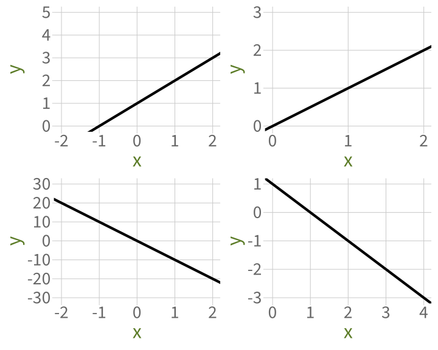